ML Engineer Intern at Deezer, MSc in CS student at ENSTA Paris and Visiting Researcher at Stanford University, I am specialized in agentic technologies and graph neural networks.
Multi-agent system that automates market research, pitch decks, and founder outreach for startup launch.
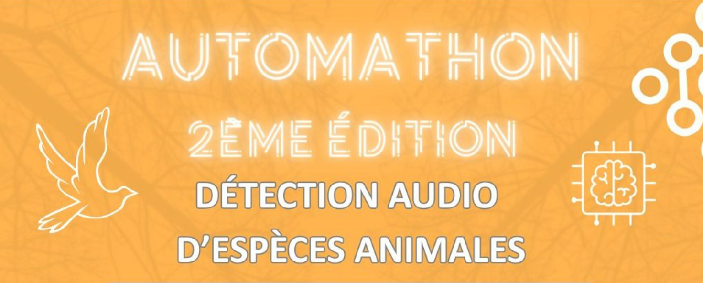
Bird vocalization detector using deep audio embeddings with model aggregation for robust noise-resistant detection.
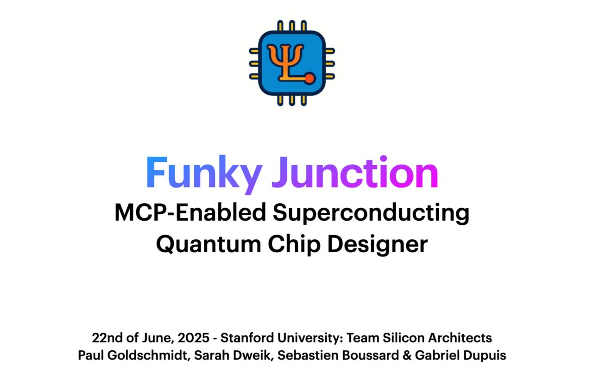
MCP-based tool for designing and assembling superconducting quantum chip architectures.
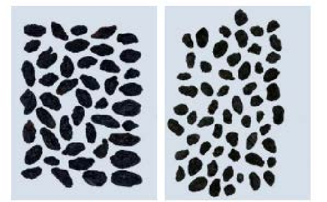
Statistical learning pipeline comparing classical and modern models for grape variety classification.
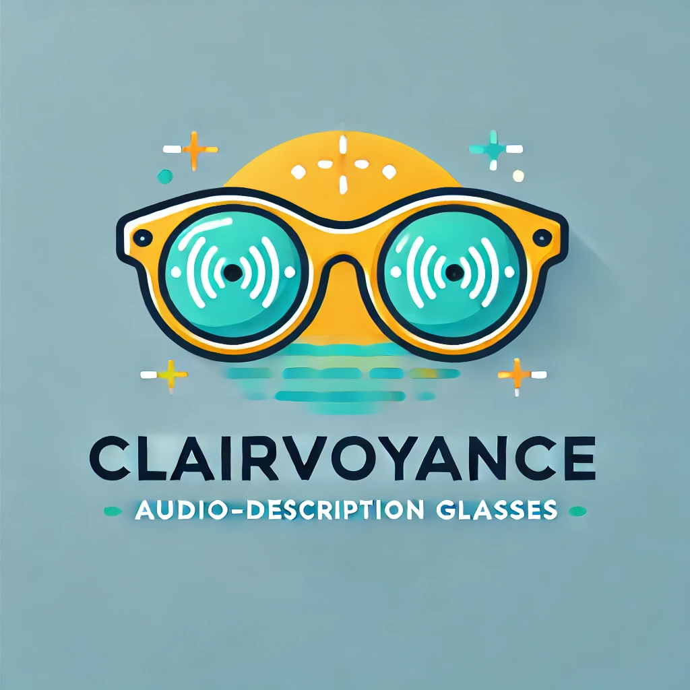
Smart-glasses assistant combining vision and speech to support visually impaired users at home.
Conversational AI coach providing personalized kettlebell training through real-time voice interaction.
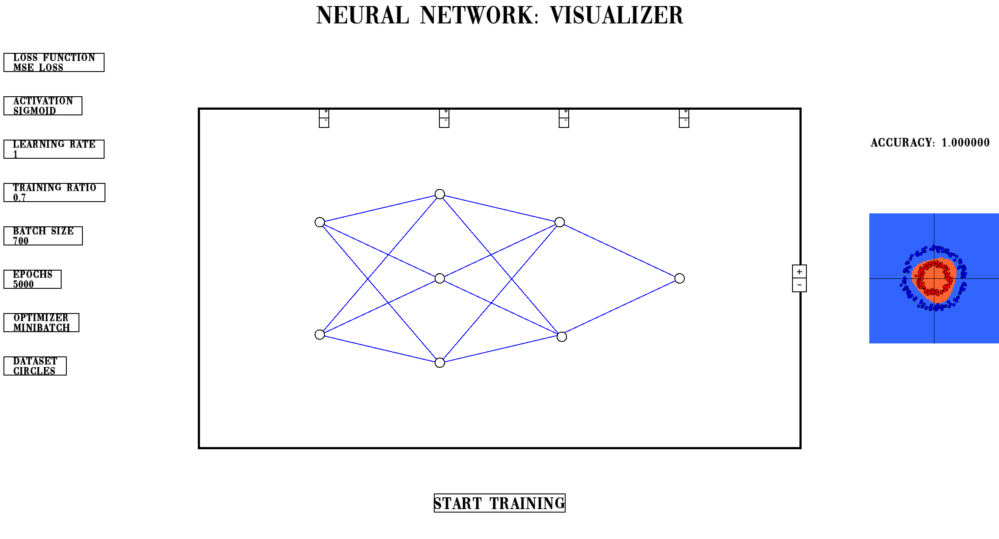
From-scratch C++ deep neural network framework implementing training and backpropagation.
AI system combining vision models and a quantized LLM to analyze skin conditions and recommend treatments.
AI agent that automates second-hand product search and matching using an MCP server and resale platform APIs.
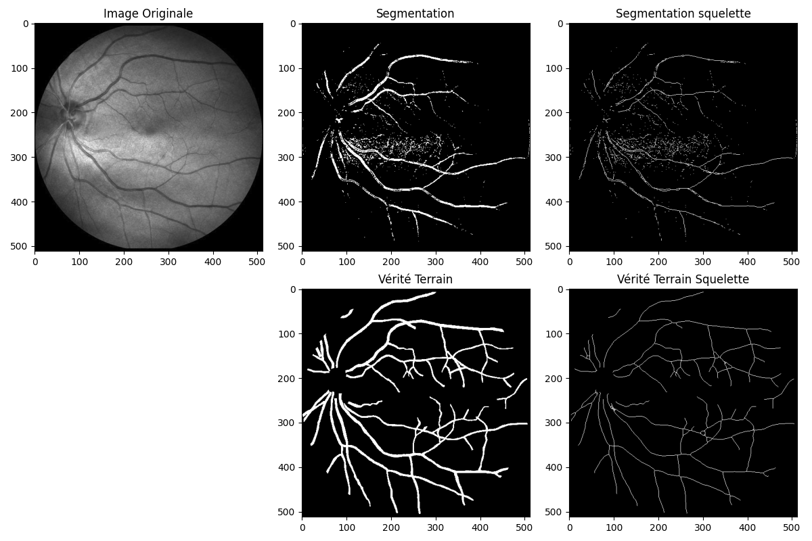
Deep learning model for segmenting retinal blood vessels from fundus images.
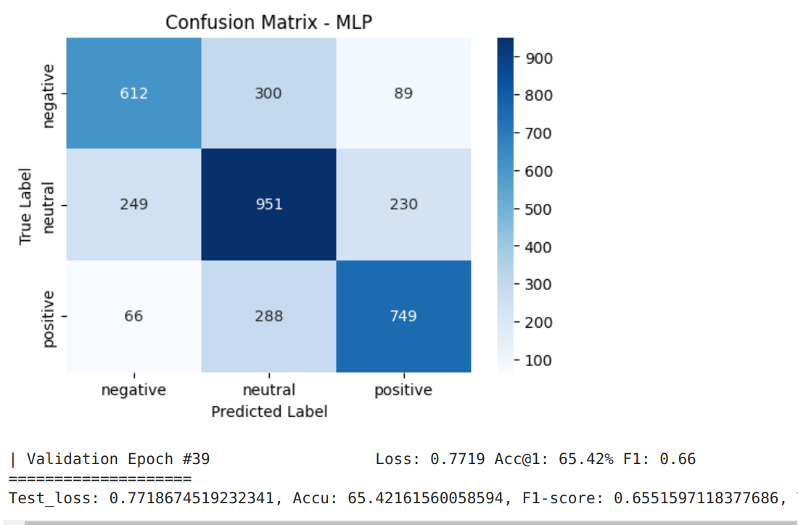
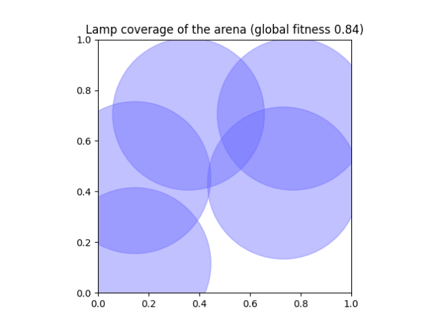
Reinforcement learning solution to optimize spatial resource coverage for irrigation planning.
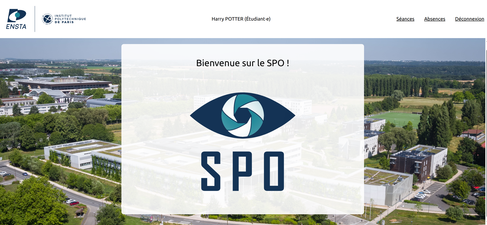
Web application for tracking student attendance built with TypeScript, Node.js, and MongoDB.
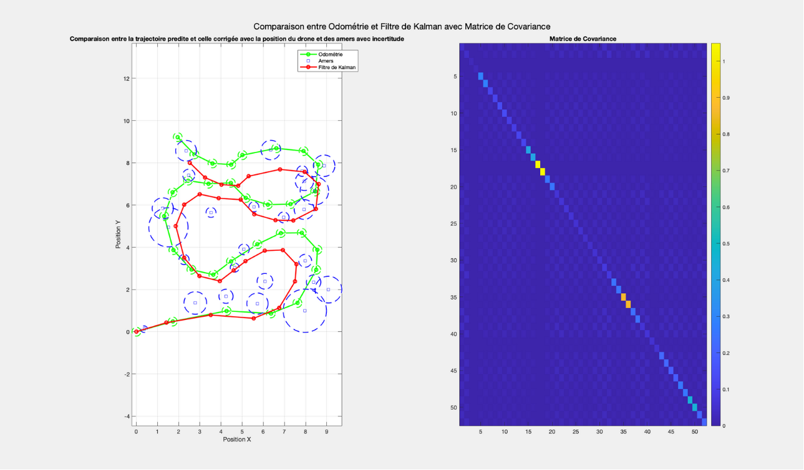
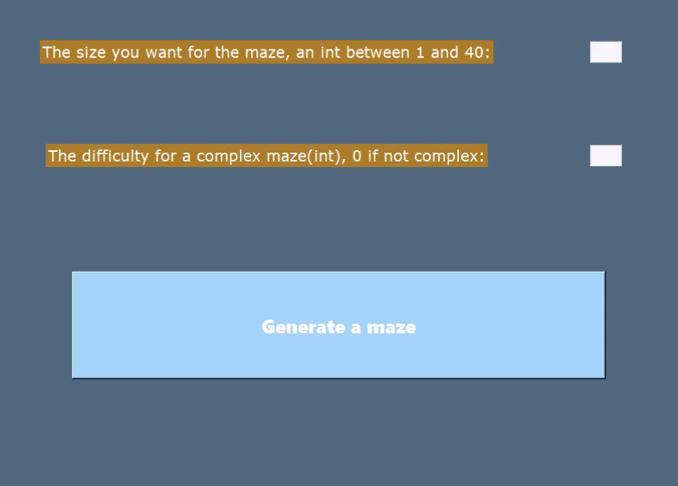
Procedural maze generation and pathfinding using classical graph algorithms.
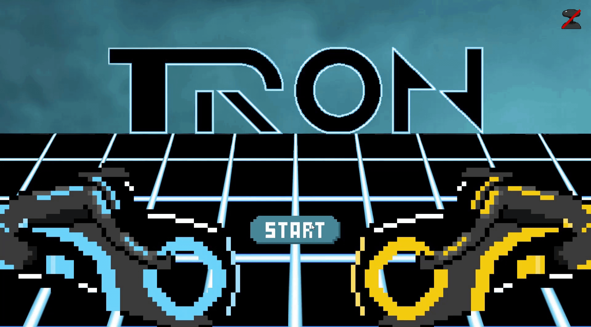
Lycée Le Parc
ENSTA Paris
DaTA Association
Deezer
Stanford University